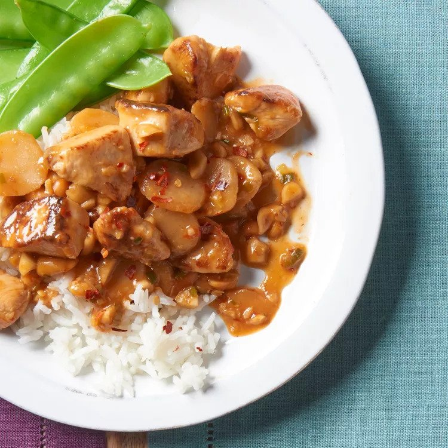

Kung Pao Chicken

Description
This tasty kung pao chicken is similar to what is served in Chinese restaurants.
It's easy to make, and you can be as creative with the measurements as you want.
You can't go wrong! The sauce reduces until nice and thick.
Steps:
- Combine your water and cornstarch and set aside
- Combine wine, soy sauce, sesame oil, and some of the water/cornstarch mixture
- Add your chicken to the mixture and refrigerate for about 30 minutes
- Combine wine, soy sause, sesame oil, and the rest of the water/cornstarch mixture
- Add chili paste, brown sugar, vinegar, chestnuts, peanuts, green onions, and garlic, and toss to mix
- Heat the chestnut mixture over medium heat until aromatic
- Transfer the chicken to a separate skillet and cook the chicken thoroughly
- Combined the chestnut mixture and chicken and simmer until sauce thickens
- Serve by itself or with rice and enjoy!